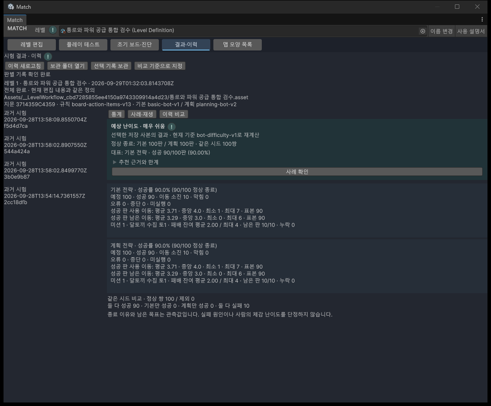

12 · 제작 흐름
레벨 하나를 끝까지 확인하기
맵을 만든 뒤 직접 플레이하고, 봇의 기록으로 수정할 부분을 확인하는 순서입니다.
준비 Unity에서 Match → 통합 작업창을 엽니다. 실제 플레이는 편집 원본의 사본으로 진행합니다.
1. 편집하고 저장
- 레벨 편집에서 작업할 레벨을 선택합니다. 저장한 모양을 재사용하려면 위쪽 맵 모양 목록을 엽니다. 등록 모양 사용 방법
- 활성 칸, 블록·장애물, 미션, 이동 수를 정합니다. 생성구·통로·발전기가 있다면 공급 목록과 연결도 확인합니다.
- 검사에서 나온 오류를 선택해 해당 위치와 값을 고칩니다. 오류를 어려운 레벨의 증거로 받아들이지 마세요.
- Ctrl+S 또는 저장 버튼으로 저장합니다. 제목의 *는 저장하지 않은 변경이 있다는 뜻입니다. 파일 이름은 위쪽 이름 변경에서 바꿀 수 있습니다.
새 모양으로 레벨을 만들 때 이전 레벨의 장애물이 자동 복사되는 것은 아닙니다. 등록 당시 장애물 정보는 배치를 고르는 참고 자료입니다.
2. 직접 플레이
- 플레이 테스트에서 시작 보드를 확인하고 시작을 누릅니다.
- 블록을 교환하거나 파워·아이템을 사용해 연결과 공급이 의도대로 작동하는지 봅니다. 후속 처리가 끝난 뒤 다음 조작을 합니다.
- 같은 조건으로 확인하려면 같은 시드로 다시, 다른 무작위 조건을 보려면 새 시드로 다시를 사용합니다. 시드는 시작 조건을 재현하는 번호입니다.
- 편집으로 돌아가기로 배치를 고칩니다. 시험에서 없앤 블록이나 사용한 아이템이 편집 원본을 바꾸지는 않습니다.
수동 플레이의 후속 처리와 봇 반복 시험의 일시정지 규칙은 다릅니다. 반복 시험은 탭을 돌아왔다고 자동 재개하지 않습니다.
3. 반복 시험
- 봇 시험 영역을 펼치고 전략별 횟수를 확인합니다. 100이면 기본 전략 100판과 계획 전략 100판, 총 200판입니다.
- 새 반복 시험을 누릅니다. 현재 편집 사본과 새 시드 묶음을 사용합니다. 두 전략은 같은 묶음을 공유합니다.
- 잠시 멈추려면 일시정지, 계속하려면 재개를 누릅니다. 일시정지 상태에서도 반복 중지를 사용할 수 있습니다.
- 예정 횟수가 모두 끝났는지 확인합니다. 중간에 멈춘 시험은 일부 실행이며 완료 시험과 구분됩니다.
100판을 두 번 더해 독립적인 200개 조건이라고 해석하지 않습니다. 전략이 같은 시드를 공유하기 때문입니다. 반복 시험 상세
4. 결과와 사례
- 결과·이력에서 방금 끝난 시험을 고릅니다. 상단의 레벨·시각·같은 정의/과거 사본 안내를 확인합니다.
- 두 전략의 성공률과 실패 시 남은 목표를 봅니다. 예상 난이도의 추천 근거와 한계를 펼쳐 표본과 기준을 확인합니다.
- 사례 확인을 누르면 대표 전략의 사례 목록으로 이동합니다. 다른 판을 보고 싶다면 목록에서 직접 고릅니다.
- 처음부터로 기록의 시작 보드를 준비하고 다음 행동 또는 자동 재생을 누릅니다. 원본 레벨에 봇의 행동을 다시 적용하는 기능이 아닙니다.

성공 0판, 오류, 표본 부족, 미완료·비호환 기록은 판단 보류가 될 수 있습니다. 해결 불가능하거나 매우 어렵다는 뜻으로 바꾸어 해석하지 마세요. 보류 이유 읽기
5. 수정하고 비교
- 기존 결과에서 비교 기준으로 지정을 누릅니다.
- 편집으로 돌아가 레벨을 수정하고 저장한 뒤 새 시험을 진행합니다.
- 새 결과를 골라 이력 비교에서 정의·시드·규칙 버전이 같은지 먼저 확인합니다. 다른 조건의 성공률 차이를 특정 수정 하나의 효과로 단정하지 않습니다.
- 기록을 계속 보관하려면 선택 기록 보관으로 새 폴더에 내보냅니다. 나중에 보관 폴더 열기로 확인합니다.
Library 아래의 로컬 기록은 Library 삭제 시 사라집니다. 같은 조건 재시험은 이전 사본과 시드를 다시 사용합니다. 현재 편집 내용을 시험하려면 새 반복 시험을 선택하세요. 보관·재생·비교 상세
멈췄을 때 확인
| 화면 상태 | 확인할 내용 |
|---|---|
| 재생 버튼이 비활성 | 사례가 선택됐는지, 기록 읽기가 끝났는지, 봇 시험이 실행 중인지, 버전 제한 안내가 있는지 확인합니다. |
| 탭을 돌아와도 시험이 멈춤 | 반복 시험의 일시정지 상태라면 재개 버튼을 누릅니다. |
| 이전 결과가 현재 레벨과 다름 | 상단의 과거 사본 안내를 읽고 현재 편집 사본으로 새 시험을 진행합니다. |
| 보관이 실패함 | 화면 오류를 확인하고 기존 폴더와 겹치지 않는 저장 위치를 선택합니다. 완료 안내를 확인하기 전에는 원본 기록을 지우지 않습니다. |
확인 범위와 변경 이력
작성일: 2026.09.29 · Windows / Unity 6000.3.10f1. 기본·통로 구성의 신규 200판씩과 결과 화면을 확인했습니다. 30단계 전체 통합 검수는 진행 중입니다. 현재: 기본·통로·발전기 구성 각 200판과 편집·저장·재생·재시작·실제 도킹 검수를 완료했습니다. HTML 브라우저 배치 검수는 사용자 승인으로 후속 이관했으며 미검증입니다. 사람의 체감 난이도도 검증한 값이 아닙니다.